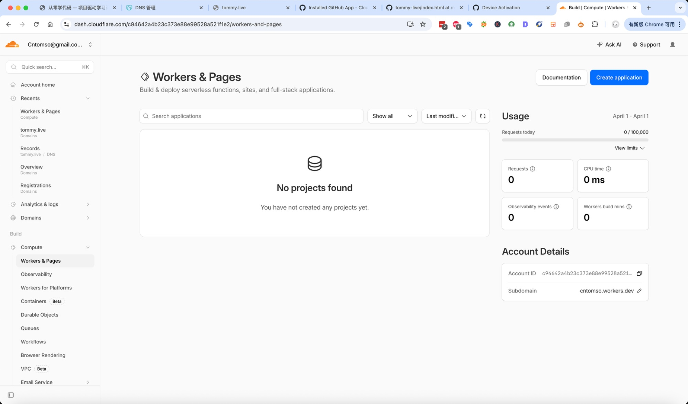
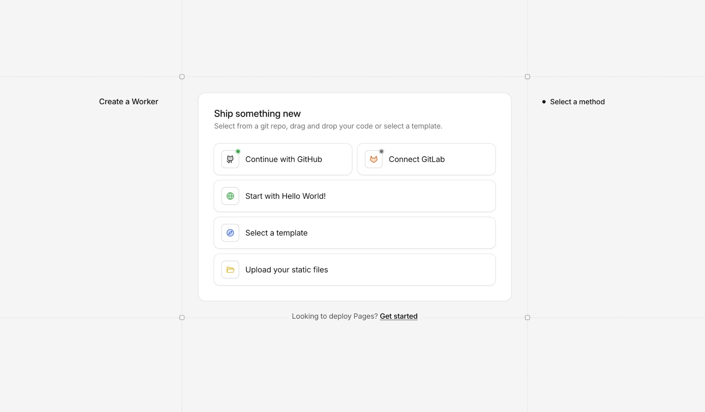
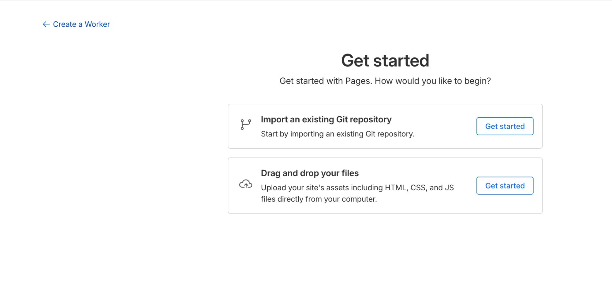
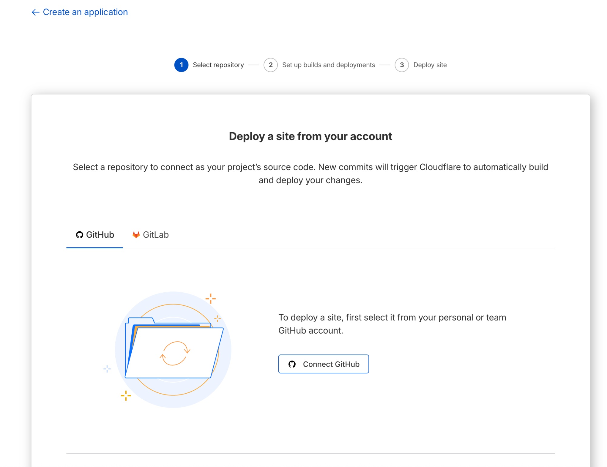
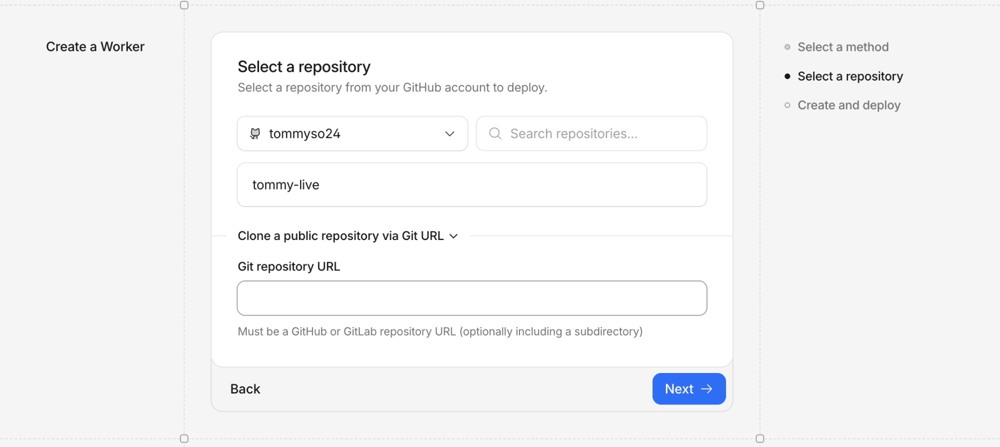
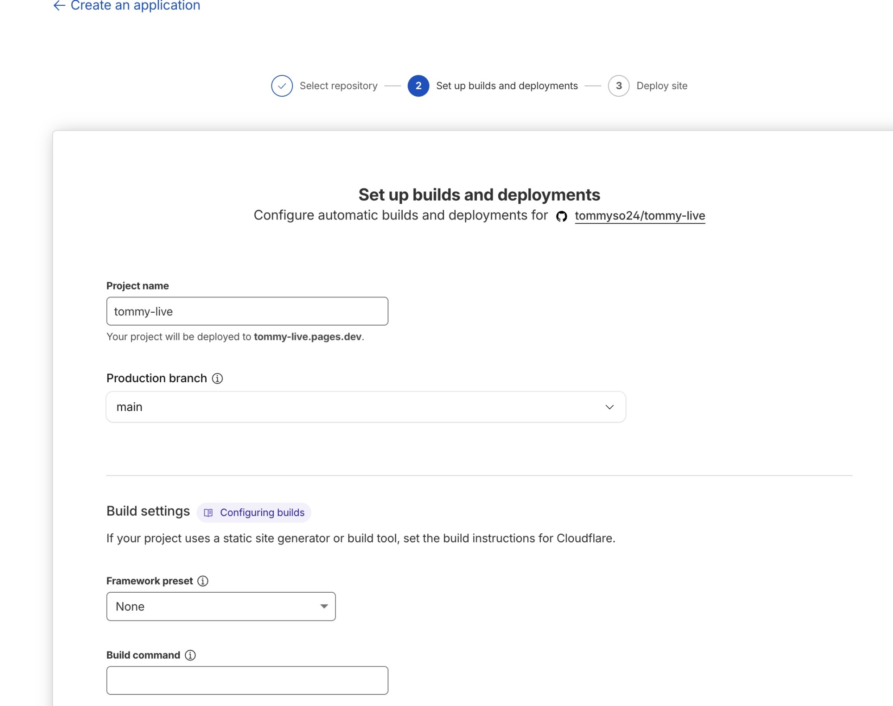
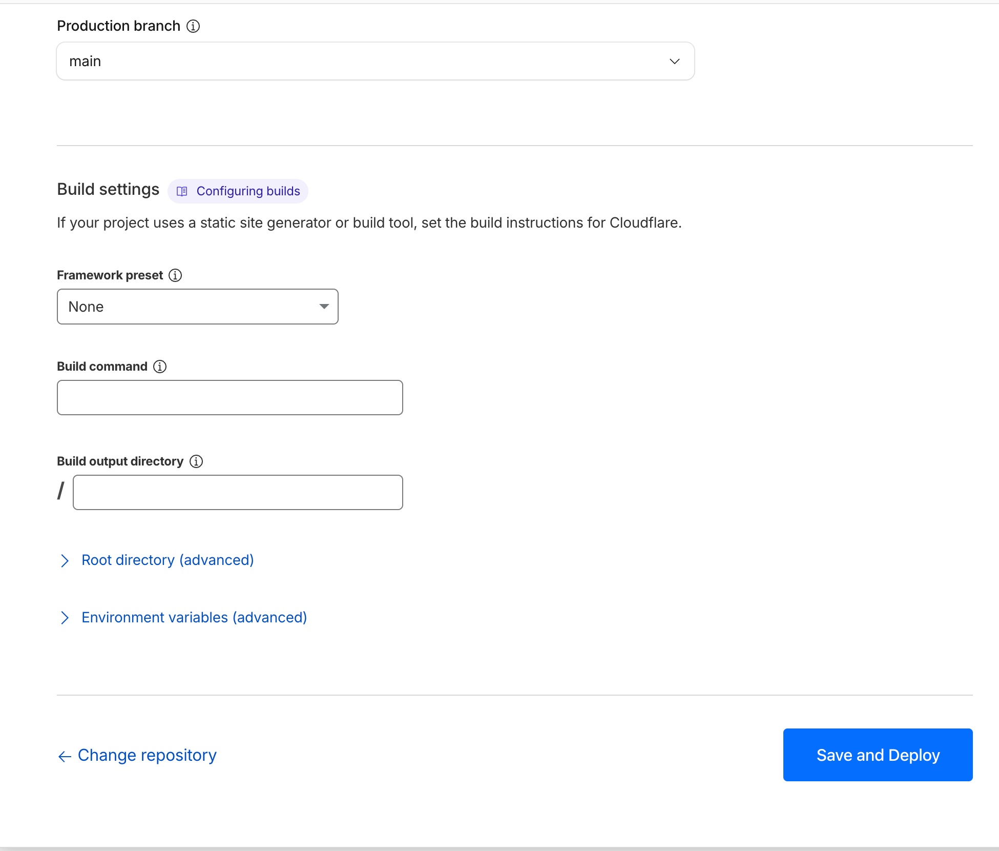
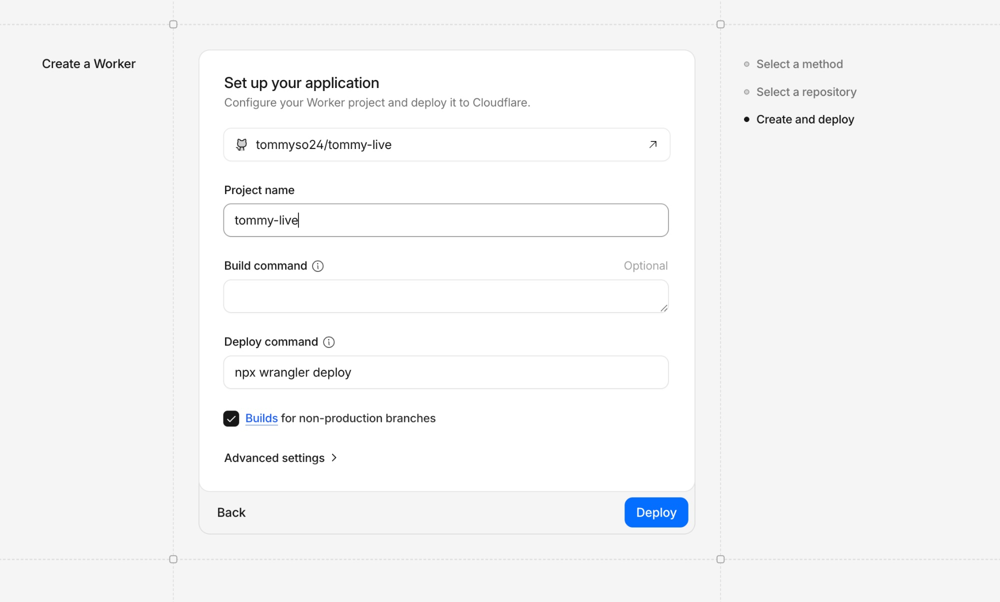

最终效果：改代码 → 网站自动更新
↓
git push 推送到 GitHub
↓
Cloudflare Pages 自动检测到更新
↓
tommy.live 自动更新上线！
搞定后，以后你做了新游戏、改了文案、更新了样式，只需要在终端敲三行命令，网站就自动更新了。下面一步步来。
第一步：注册 GitHub 账号
1 打开 GitHub 官网注册
浏览器打开 https://github.com，点击右上角 Sign up。填写邮箱、密码、用户名，完成人机验证，去邮箱点击验证链接。选择 Free 免费计划就够用了。
2 创建一个新仓库
登录后，点击右上角的 + 号 → New repository，然后：
| 选项 | 填什么 |
|---|---|
| Repository name | tommy-live（或你喜欢的名字） |
| Description | 选填，比如"我的个人网站" |
| Visibility | 选 Public（公开） |
| Add a README file | 不要勾选 |
| .gitignore / license | 都不选 |
点击 Create repository。创建完成后会显示一些命令提示，先别动，记住你的仓库地址：https://github.com/你的用户名/tommy-live.git
第二步：在电脑上准备项目
3 创建项目文件夹
在电脑上新建一个文件夹叫 tommy-live，把你的 index.html（网站首页文件）放进去。文件结构如下：
tommy-live/
└── index.html4 安装 Git
打开终端（Mac 按 Command + 空格 搜索 Terminal；Windows 按 Win + R 输入 cmd），输入：
git --version如果显示版本号说明已安装，跳到下一步。如果没有：
Mac：终端输入 git --version，系统会自动提示安装 Xcode 命令行工具，点安装。
Windows：去 https://git-scm.com/download/win 下载安装，一路 Next 默认即可。
安装完成后，配置你的身份信息（用你注册 GitHub 的邮箱）：
git config --global user.name "你的名字"
git config --global user.email "你的邮箱@example.com"第三步：用 Cursor 推送代码到 GitHub
5 用 Cursor 打开项目
打开 Cursor → File → Open Folder → 选择 tommy-live 文件夹。你会在左侧看到 index.html。
6 打开终端
快捷键 Ctrl + `（Mac 是 Control + `，反引号在键盘左上角 ESC 下面），底部会弹出终端窗口。
7 初始化并推送
在终端里逐行输入以下命令（每行按回车执行）：
git init
git add .
git commit -m "第一次提交：个人主页上线"
git branch -M main
git remote add origin https://github.com/你的用户名/tommy-live.git
git push -u origin main8 处理 GitHub 登录验证
执行 git push 时会要求登录。如果弹出浏览器窗口，点 Authorize 授权即可。
如果终端要求输入用户名和密码：
- 打开
https://github.com/settings/tokens - 点 Generate new token (classic)
- Note 随便写，如 "cursor"
- Expiration 选 90 days
- 勾选 repo（第一个选项）
- 点 Generate token
- ⚠️ 立刻复制 token！它只显示一次
- 把 token 粘贴到终端当密码用
完成后，打开 https://github.com/你的用户名/tommy-live，如果能看到 index.html，说明推送成功了！
第四步：在 Cloudflare Pages 连接 GitHub（重点！坑最多的地方）
这一步是我踩坑最多的地方，Cloudflare 后台的 Worker 和 Pages 入口混在一起，非常容易走错。跟着下面的路线走就不会迷路。
9 进入 Cloudflare 面板
登录 https://dash.cloudflare.com，点左侧菜单的 Workers & Pages，然后点右上角 "Create application"。

Workers & Pages 主页面，点右上角 "Create application"
10 🚨 最关键的一步：不要选错入口！
点完 Create application 后，你会看到这个页面：

"Ship something new" 选择页面
我第一次就是在这里直接点了 "Continue with GitHub"，结果走进了 Worker 流程，配置页面完全不一样，部署出来也不对。
11 进入正确的 Pages 流程
点击底部的 "Get started" 后，你会看到这个页面：

这才是 Pages 的正确入口
选择第一个："Import an existing Git repository" → 点 "Get started"。
12 连接 GitHub 账号
如果你之前还没授权过，页面会显示 "Connect GitHub" 按钮：

点击 "Connect GitHub" 授权
点击后会弹出 GitHub 授权窗口：
- 选择 "Only select repositories"
- 在下拉菜单里找到并勾选
tommy-live - 点击 "Install & Authorize"
13 选择仓库
回到 Cloudflare 页面（可能需要刷新），你会看到 tommy-live 出现在仓库列表里：

点击 "tommy-live" 选中，然后点 "Next →"
选中 tommy-live，点 "Next →"。
14 配置构建设置
进入构建配置页面：


构建设置页面——几乎不用改任何东西
| 选项 | 设置 |
|---|---|
| Project name | tommy-live（保持默认） |
| Production branch | main（保持默认） |
| Framework preset | None（保持默认） |
| Build command | 留空 |
| Build output directory | /（保持默认） |
所有设置都保持默认，直接点右下角 "Save and Deploy"！
说明你走错了！点 Back 返回，重新从 "Looking to deploy Pages? Get started" 进入。Worker 的配置页面长这样——看到就知道走错了：

❌ 这是 Worker 的配置页面，看到 "Create a Worker" 字样就说明走错了
15 等待部署完成
点完 "Save and Deploy" 后，Cloudflare 会自动拉取 GitHub 仓库的代码并部署。等几十秒，看到 "Success" 就成功了！你会得到一个 tommy-live.pages.dev 的临时网址。
第五步：绑定自定义域名
16 添加自定义域名
在你的 Pages 项目里，点 Custom domains → Set up a custom domain → 输入 tommy.live（换成你自己的域名），按提示完成 DNS 配置。
如果你的域名服务器已经指向了 Cloudflare（像我之前做的那样），域名绑定会很快生效。
第六步：验证自动部署（激动人心！）
17 改点代码试试
在 Cursor 里打开 index.html，随便改一行内容，比如把标题改一下，然后保存。
18 三行命令，自动更新
git add .
git commit -m "更新：测试自动部署"
git push然后打开 Cloudflare Pages 面板，你会看到一个新的部署正在进行。等几十秒完成后，刷新你的网站——改动已经自动生效了！
不管是修改主页、做新游戏、写博客文章，你只需要：
- 在 Cursor 里用 Claude Code 写代码（或自己写）
- 终端执行
git add .→git commit -m "说明"→git push - 等 30 秒，网站自动更新
踩坑总结
把我踩过的坑汇总一下，希望你能避开：
| 坑 | 正确做法 |
|---|---|
| Cloudflare 上传 index.html 被拒绝 | Pages 只接受文件夹或 zip 包，不能上传单个文件 |
| 点了 "Continue with GitHub" 进入 Worker 流程 | 要点最下方 "Looking to deploy Pages? Get started" |
| GitHub 授权后 Save 按钮灰色按不了 | 这是正常的，授权已经完成，直接切回 Cloudflare 页面 |
| 配置页面标题是 "Create a Worker" | 走错了！返回重新从 Pages 入口进 |
| git push 要求输入密码 | 不能用 GitHub 密码，要用 Personal Access Token |
| 创建仓库时勾了 README | 不要勾任何选项，保持仓库完全为空 |
快速参考
日常三步曲
git add . # 添加所有改动
git commit -m "改了什么" # 创建存档点
git push # 推送到 GitHub，自动部署常见问题
| 问题 | 解决 |
|---|---|
git push 被拒绝 | 先执行 git pull，再 git push |
| 不确定改了什么 | 执行 git status 查看 |
| 想撤销所有修改 | 执行 git checkout . |
| 部署后网站没更新 | 等 1-2 分钟，清浏览器缓存再刷新 |